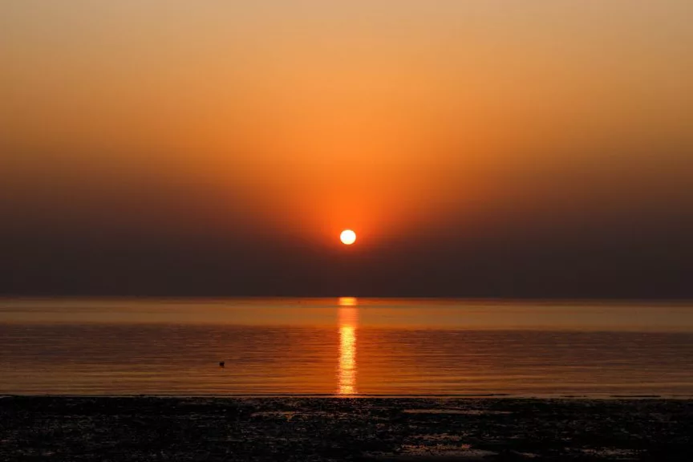

West Bengal is an 88752 sq. km state consisting of 9.03 crore people. There are a plethora
of activities to do in this state, therefore here’s
our list of the best places to visit in West
Bengal, and all that it has to offer.
best places in kolkata Victoria-memorial : (credits -Shantanu Kashyap)
A British Memorial dedicated to Queen Victoria is made up of white marble and a mix of
British, European, Indian, and Mughal architectural styles.
In addition, it also has
a museum filled with Indian and British history.
In Mother Teresa’s house, one can observe a small museum dedicated to her, a tomb, relics
and her room. The sisters are extremely approachable and
welcoming making the entire
experience more enjoyable.
This Eco-tourism Park has replicas of the 7 wonders, making it an ideal destination for
tourists. Other activities like cycling, and visiting the toy train
and butterfly park are also
accessible to tourists.
Science City does a brilliant job at integrating education with entertainment and is perfect
for STEM students, science geeks, or anyone who is interested
in science.
Quest Mall contains an array of stores ranging from designer stores like Gucci and Michael Kors to a Food court and many other shops.
Tiger Hill is known for its sunsets, therefore one should visit this hill early in the morning to see the breathtaking view it offers.
Another irresistible destination for tourists is the Batasia loop as one can go on toy train rides and see views of the mountains.
The city center is another shopping mall one can visit in West Bengal, Siliguri. It contains food courts, salons, branded stores and many more shops.
Although Peacocks, Monkeys and deer are seen more frequently in Bengal Safari, one could get lucky and be able to see Tigers or Leopards.
In Digha, there are many beaches like Shankarpur beach, Udaipur beach, and Talsari beach. One can spend quality time with family or friends or it could help one detach from the real world for a few precious moments.
This aquarium has various marine species of fish, coral and aquatic animals. There is no charge for entry, it is open to all, however, photography is prohibited.